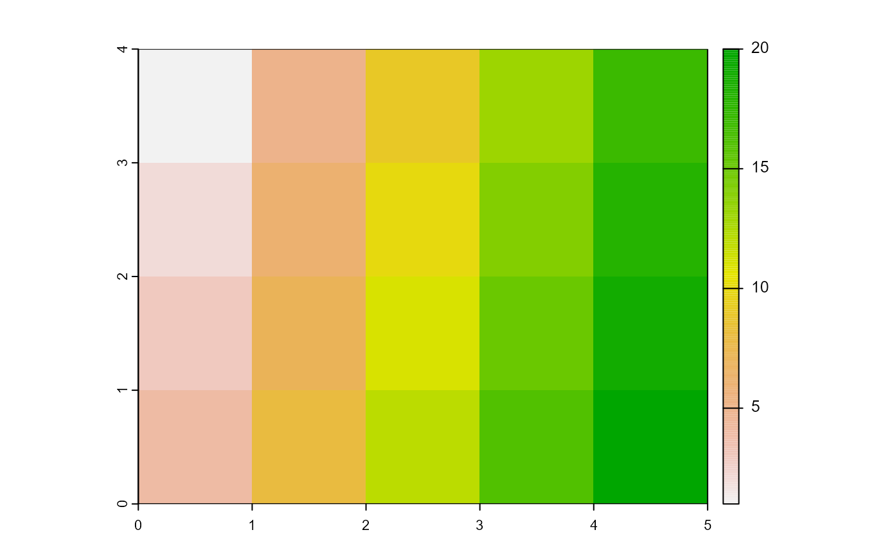

Create and Export mosaics
Usage
mosaic_input(
mosaic,
mosaic_pattern = NULL,
info = TRUE,
check_16bits = FALSE,
check_datatype = FALSE,
...
)
mosaic_export(mosaic, filename, datatype = NULL, overwrite = FALSE, ...)Arguments
- mosaic
For
mosaic_input(), a file path to the raster to imported, a matrix, array or a list ofSpatRasterobjects.For
mosaic_export(), anSpatRasterobject.
- mosaic_pattern
A pattern name to import multiple mosaics into a list.
- info
Print the mosaic informations (eg., CRS, extend). Defaults to
TRUE- check_16bits
Checks if mosaic has maximum value in the 16-bits format (65535), and replaces it by NA. Defaults to
FALSE.- check_datatype
Logical. If
TRUE, checks and suggests the appropriate data type based on the raster values.- ...
Additional arguments passed to
terra::rast()(mosaic_input()) orterra::writeRaster()(mosaic_output())- filename
character. The Output filename.
- datatype
The datatype. By default, the function will try to guess the data type that saves more memory usage and file size. See
terra::writeRaster()andterra::datatype()for more details.- overwrite
logical. If
TRUE, filename is overwritten.
Details
mosaic_input()is a simply wrapper aroundterra::rast(). It creates aSpatRasterobject from scratch, from a filename, or from another object.mosaic_export()is a simply wrapper aroundterra::writeRaster(). It write aSpatRasterobject to a file.
Examples
library(pliman)
# create an SpatRaster object based on a matrix
x <- system.file("ex/logo.tif", package="terra")
rast <- mosaic_input(x)
#> class : SpatRaster
#> dimensions : 77, 101, 3 (nrow, ncol, nlyr)
#> resolution : 1, 1 (x, y)
#> extent : 0, 101, 0, 77 (xmin, xmax, ymin, ymax)
#> coord. ref. : Cartesian (Meter)
#> source : logo.tif
#> colors RGB : 1, 2, 3
#> names : red, green, blue
#> min values : 0, 0, 0
#> max values : 255, 255, 255
mosaic_plot(rast)

# create a temporary filename for the example
f <- file.path(tempdir(), "test.tif")
mosaic_export(rast, f, overwrite=TRUE)
#> Exporting the mosaic using datatype = INT1U
list.files(tempdir())
#> [1] "Rf3f787d361c74"
#> [2] "bslib-afbb1fec5f060724a37c2b2e4cd64d08"
#> [3] "downlit"
#> [4] "file3f783ac2384b"
#> [5] "file3f7845e16fbb"
#> [6] "file3f786f2b402e"
#> [7] "file3f78ff6121c"
#> [8] "test.tif"
#> [9] "test.tif.aux.xml"